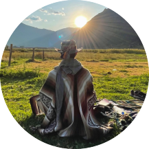

|  |
Matteo De CiccoElectornic Engineer, failed Startupper and wannabe World traveller I was born in Rome in 1988, I grew up in Italy and France, and after my university studies I moved to London. My satisfaction in solving problems pushed me towards studing engineering, although the choice of discipline was quite random. I eventually got passionate about designing digital systems, mostly in the consumer product area. After several years of working in the field, I decided to take some time to explore other aspects of life. Since 2019, I am nomad and have been travelling around the Globe, still not certain of what my life will be tomorrow! I embrace a mindful way of living, I like Adlerian psycology and I'm in love with rock climbing. |
| 2019 - 2022 | Travelling around the World full-time, dedicating time to explore new hobbies and passions outside the working life |
| 2016 - 2019 | Led the Egineering department at Hanhaa in the development and production of 20k Parcelive. Left the company after failing in the role of COO, London (UK) |
| 2014 - 2016 | CTO at Flicktek, tried to build crazy futuristic technology, but the company went bankrup before we could make it, London (UK) |
| 2013 - 2014 | Engineer at SpaceExe, small startup in Rome who tried to bring GPS technology everywhere, Rome (IT) |
| 2012 - 2014 | Founder at Dedilab, a community of makers and nerds, trying to make university less boring, Rome (IT) |
| 2011 - 2012 | Started my technical carrer by fixing equipment at QZar Lasergame, Rome (IT) |